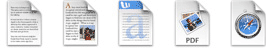
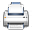
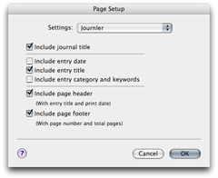

Exporting & Printing
Exporting & Printing
Saving Entries as Independent Files
Exporting saves your entry as an external file. Journler supports seven file types to meet your needs: text (txt), rich text (rtf) and rich text with attachments (rtfd), microsoft document (doc), portable document format (pdf), hypertext web (xhtml) and web archive (webarchive). When you save your entry as a text, rich text, word, xhtml or web archive file Journler only exports the entry's text. Select the rtfd or pdf format to include embedded pictures in your exported entries.
Choose Export Selected Entries from the File menu or use the Export toolbar button to export the selected notes. Alternatively choose Export Journal and export any dated range of entries from your entire journal.
Tip: Quickly save the selected entries as rich text documents by dragging them from the Browse Table to a folder in the Finder.
Saving Media as Independent Files
You've attached a number of files and other media to your entries. Getting them out of your journal is easy. Select the media to display it in the built-in media viewer and from there choose Export Selected Resources from the File menu. You may bypass this entire process and avoid actually viewing the media before exporting it. Either drag the icon embedded in your entry's text to a location in the Finder or do the same for the icon shown in the resource pane.Tip: It is not currently possible to export an entry with its associated resources. However, an Apple Script has been created to do just that. Have a look at Journler's online forum for more information.
Printing Entries & Media
To create hard copies of your entries and media you will need to print them. Printing functions as it would in any word processing program. Specify your page settings in Page Setup under the File menu. Choose an entry or attached file and press the Print toolbar button. Make further changes to your print preferences, preview the print job, and set it going.You can also print multiple entries in one session. Select Print Journal from the File menu. Just as you would with the Journler export function, select a range of entries you would like to print. Journler will then build a single print job from all of these entries. Be patient, especially if you are printing a number of entries. When the Print window appears, proceed as normal.

Print Customization
Before you send your entries to the printer, take the opportunity to customize the print job. From the File menu select Page Setup. Choose Journler from the Settings list.Journler Page Setup options are straightforward and can be checked in any combination. Let's take page headers and footers as an example. The header includes the title of the entry and the print date while the footer shows the page number and total number of pages.